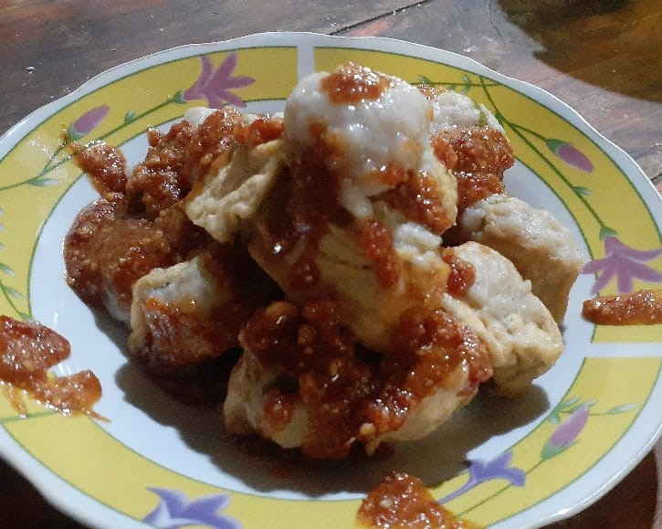
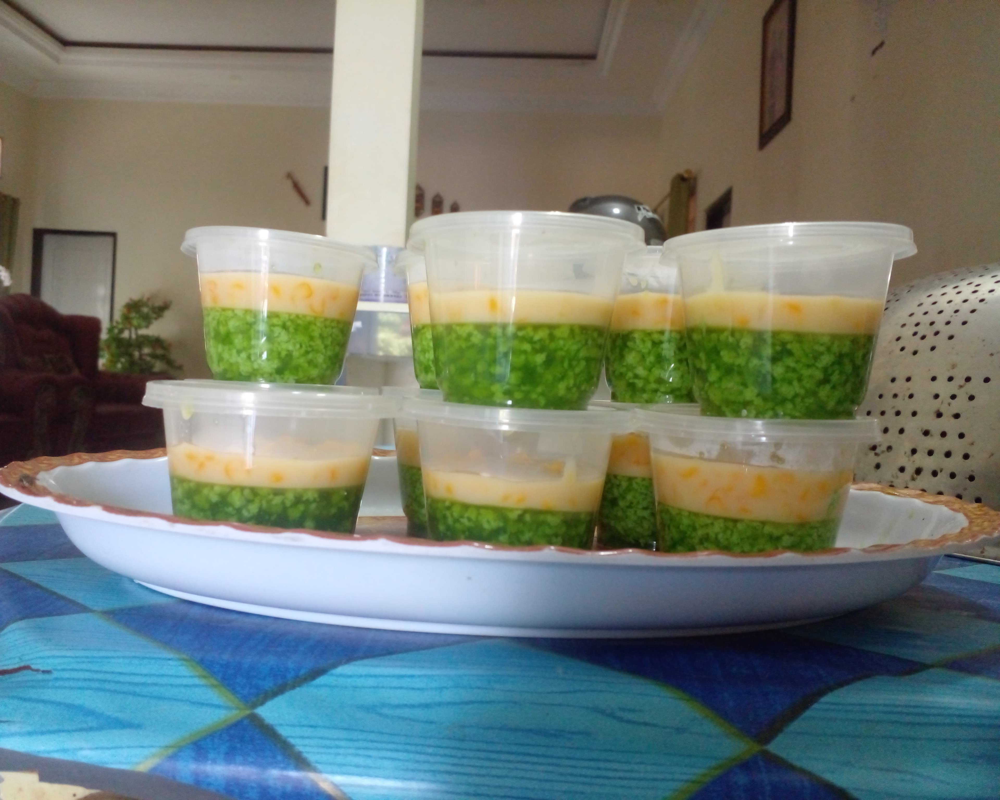

Batagor Ikan
Batagor Ikan kami adalah perpaduan sempurna antara kelezatan dan kualitas bahan baku pilihan. Dibuat dari ikan segar yang diolah dengan resep tradisional, batagor ini menawarkan rasa gurih yang khas dan tekstur yang renyah di luar namun lembut di dalam. Setiap potongan batagor dipastikan memberikan pengalaman kuliner yang memuaskan.
Jasuke
Temukan kenikmatan sempurna dari Jasuke, camilan khas Indonesia yang memadukan manisnya jagung rebus dengan gurihnya keju parut dan kelembutan susu kental manis, dalam setiap gigitan.